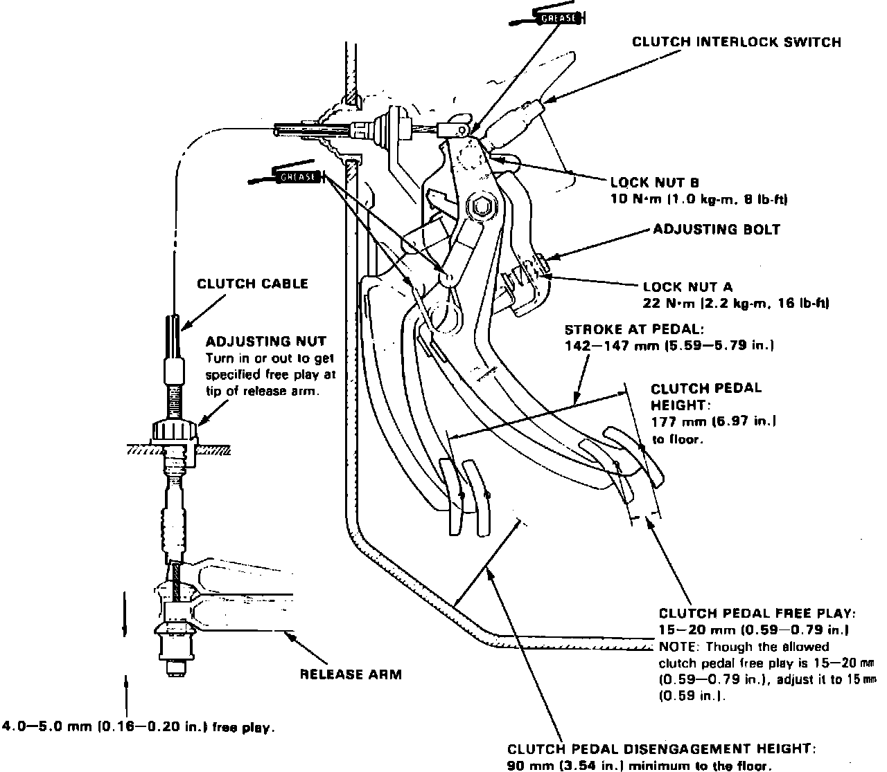

Clutch: Adjustments
Fig. 3 Clutch Pedal Adjustments:

1. Measure clutch pedal disengagement height and freeplay, Fig. 3.
2. Adjust freeplay to specifications by turning adjusting nut as necessary.
3. Ensure specified release arm freeplay exists following adjustment.
4. On models equipped with cruise control, turn adjuster A, Fig. 3, until clutch pedal stroke is within specifications, then tighten locknut B.